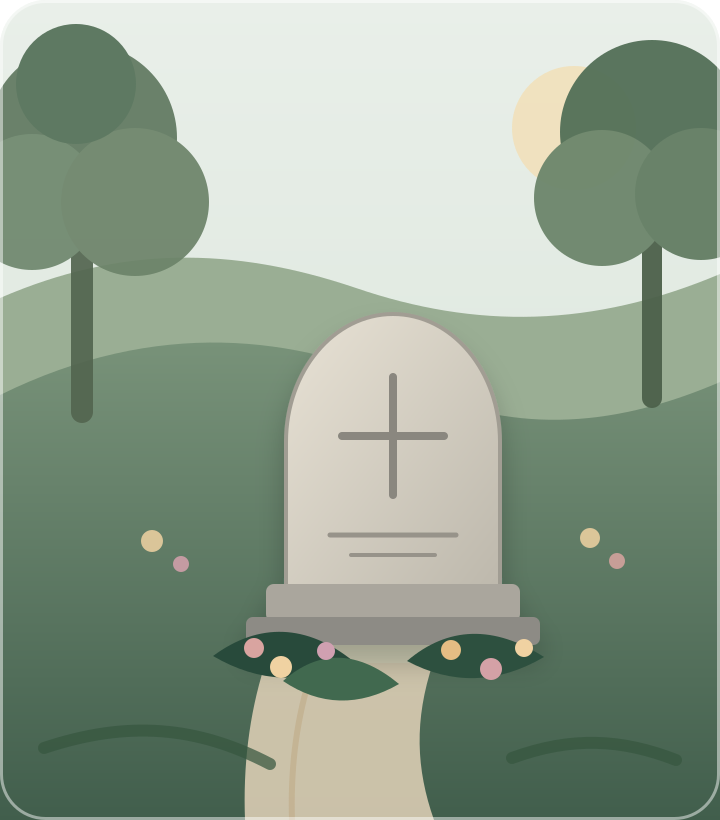

Tell us about the memorial
Share the cemetery, location details, memorial type, and the kind of care you are considering.
Respectful care from a distance
Where They Rest helps families arrange dignified grave and memorial care when distance, health, or life makes visiting difficult.

Simple, thoughtful, transparent
We confirm the resting place, understand your wishes, and document the visit so you know exactly what was done.
Share the cemetery, location details, memorial type, and the kind of care you are considering.
We review cemetery requirements, service availability, memorial condition, and a clear quote before work begins.
A local Authorized Memorial Steward performs the approved service with dignity and attention to detail.
Receive dated photos, completed-service notes, and any observations that may need your attention.
Memorial care services
Every service is adapted to the memorial material, local cemetery rules, seasonal conditions, and the family’s instructions.
Material-appropriate surface care for headstones, markers, plaques, and surrounding presentation.
Placement of approved fresh or seasonal flowers, wreaths, and meaningful family-provided tributes.
Planned visits around anniversaries, holidays, birthdays, changing seasons, or family traditions.
Dated photos and concise notes showing the memorial, completed work, and visible concerns.
Non-technical reporting of visible leaning, cracking, staining, damage, or grounds concerns.
Clear communication when permissions, special instructions, or cemetery-approved providers are required.
Care plans
Choose a single visit or arrange recurring care. Final pricing is confirmed only after location, access, memorial condition, and requested services are reviewed.
A one-time visit for photos, condition notes, and selected care.
Planned visits across the year, tailored to seasons and family dates.
A custom schedule for multiple services, memorials, or special instructions.
You should never have to wonder
Families receive a straightforward record of the visit—not vague assurances. Photos and notes help you feel connected and informed, even when you are far away.
“The goal is not simply to complete a task. It is to care for a place that matters deeply to someone.”
Where They Rest service principleA trusted local network
Where They Rest is being designed to connect families with reliable local professionals who can provide respectful, documented memorial care in their communities.
Express interestLaunching carefully
Where They Rest is in preliminary development. Requests will be reviewed based on cemetery location, access, and the availability of a qualified local steward.
Frequently asked questions
Not automatically. Memorial material, condition, age, inscriptions, coatings, and cemetery restrictions must be considered first. Unsafe or inappropriate cleaning methods will not be used.
Requirements differ by cemetery. Where permission, approved-provider status, or family authorization is required, it must be confirmed before service.
You can request a meaningful date, but timing depends on cemetery access, weather, local availability, and the agreed service window.
Not as part of standard memorial care. We can document visible concerns and, where possible, help identify the appropriate cemetery or qualified monument professional.
Start with a simple request
Share only what you are comfortable providing. Detailed personal or memorial information should not be submitted until secure intake is available.